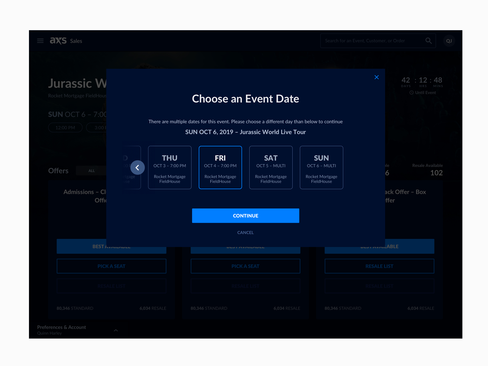
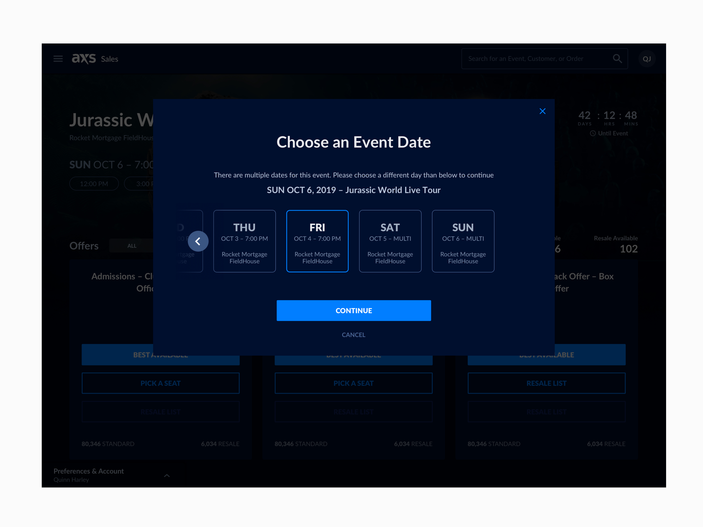

AXS
An internal tool that was also white labeled to B2B companies for event ticket sales

I was part of a team that was tasked with redesigning a functional product that hadn't been updated in 16 years. The project had a tight deadline of 3 months, and the goal was to create usable software that would bring in revenue for the company, either through its own brand or through white labeling to other companies.
To gather insights and inform our design decisions, I worked with a team of researchers to interview real users on a weekly basis. I also needed to balance the desire to create a fresh and new design with the need to maintain some degree of familiarity for users who had been using the product for 16 years.
To test my designs, I created low-fidelity mockups and prototypes using tools like Zeplin and Sketch and then tested those designs with real, active users. Through this project, I learned how to solve complex problems as part of a team of designers.
Defining the problems with the old Inventory software
The old software was not accessible. Our users said they would get eye strain from looking at the small text and bright white background in the dark while at the ticketing booth.
There wasn't a great way of quickly searching venues and events or handling triage.
Another problem with the old software was there wasn't a way to search by Ticket Type, Comps, VIP, Handicap Accessible, Different Tiers, etc.

 


Fixing the seat map experience
Through extensive user interviews and usability testing, we identified key pain points in the existing ticketing system. Users struggled with complex navigation, lack of customization options, and inefficient data entry processes. These insights guided our design decisions throughout the project.
We also added a layers button with a pop-out for a much better experience. I came up with this idea so you can filter by seat type, such as(Disabled, Comps, Price point, etc.) This makes it much easier for the ticket agents to find the right seat for each individual.
We ran user testing with our real active users on these views and features, and they found them to be significantly better and easier to use than our previous 16-year-old software.
The user goal for inventory was to make the ticket sellers' jobs much easier.
The old software was clunky and lagged. It wasn't designed to handle the day-to-day tasks the tellers faced daily in 2021.
We ran user tests on a few different colorways for the refresh. Ultimately, we settled on this dark blue colorway because it is accessible and easy on the eyes in dimly lit rooms.
For our pricing team, we added tools that recommend ticket pricing changes to make their jobs easier. This was a highly requested feature from that side of the company.
Shifting the focus to a search-based product
Before the redesign, the product wasn't focused on search functionality, and our stakeholders wanted to change this. With my intuition that search should be added, I spoke up and suggested it.
From dozens of user interviews that I helped conduct and facilitate, we quickly realized how important this feature would be.
Our Ticket Tellers, as well as pricing and triage teams, had a tough time doing their job without being able to search for names, events, and prices quickly.
We went through many iterations of this, created lo-fi mockups and prototypes using Figma and Zeplin, and tested them on the users we initially interviewed in the research phase.
We found a great solution, and our users found that what we came to for this solution heavily impacted their workflow and made it much easier to get the job done in a fraction of the time.